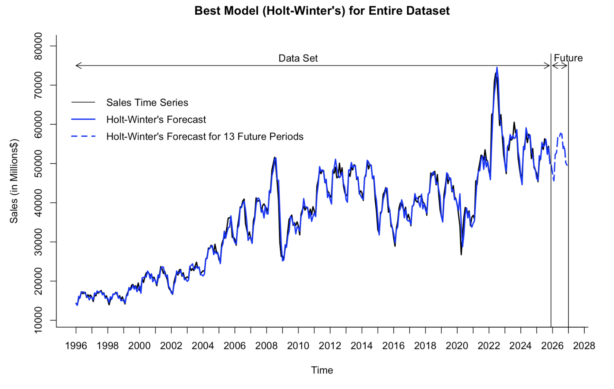
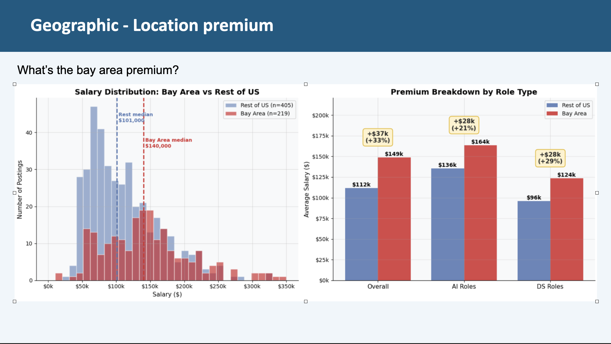

Tableau · Data Visualization
Sales & Customer Dashboards
This interactive Tableau project includes separate Sales and Customer dashboards
designed to help sales managers and executives quickly understand performance.
Both dashboards shows three key KPIs on the top where the previous year's KPIs are also shown for comparison.
The Sales Dashboard brings together sales, profit, and quantity KPIs,
monthly and weekly trends, and product subcategory comparisons. It makes high and low performing
periods easier to spot, including weeks above or below average sales and profit.
The Customer Dashboard focuses on customer behavior and value, with
customer distribution by number of orders and the top 10 customers by profit.
The Customer Dashboard focuses on customer behavior and value, with
customer distribution by number of orders and the top 10 customers by profit.
Buttons make it easy to move between the two dashboards, while year selection and
filters for product category, subcategory, region, state, and city let
users explore the data from different angles.
Open the dashboard in Tableau Public →
R · TIME SERIES FORECASTING
Forecasting U.S. Gasoline Station Sales
A time-series forecasting project using 359 monthly observations of
U.S. gasoline station sales from 1996 through 2025. My team compared
regression models with trend and seasonality, a two-level model,
Holt-Winters exponential smoothing, and ARIMA to forecast sales for
the following 13 months.
After evaluating the models with RMSE and MAPE, we selected a
Holt-Winters model for the final forecast. Its 2.792% MAPE and ability
to respond to recent shifts in the series made it a useful choice for
near-term planning in a changing market.

WEB SCRAPING · DATA ANALYTICS
AI vs. Data Science Job Market Analysis
A job-market analysis comparing 920 AI/ML and Data Science job
postings. My team used Selenium and BeautifulSoup to collect posting
information, then transformed unstructured text into fields for
skills, education requirements, salary, work arrangement, and
geographic analysis.
We found substantial overlap between AI and Data Science skill sets,
alongside differences in compensation and location. The analysis
highlighted a Bay Area salary premium, with a median salary of $140K
compared with $101K elsewhere in the U.S., helping job seekers better
understand where opportunities and pay vary across the market.
